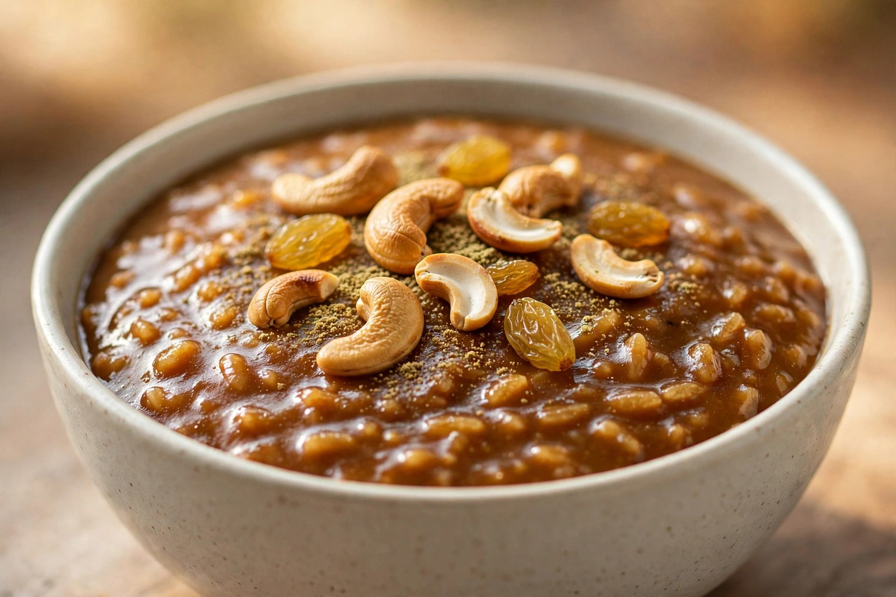

Mysore Pak
Also known as Mysuru Pak in Karnataka, India
Karnataka, IndiaAutumnSnackVegetarianFestive · DiwaliKids love it
Also known as rasiyav in Bihar, India
AI-assisted · Human-reviewed · Not kitchen-tested
Sign in to save favorites. Sharing instead of copying keeps this library free.

Sharing instead of copying keeps this library free.
Something went wrong mid-cook? Pick the symptom.
Everything is cooked right, but nothing sings — flat, dull flavor.
Blackened edges or a scorched pan — the line between char and rescue.
The timing slipped — food gone past tender, or pulled before it was done.
Rasiyaw carries a village belief reported during Chhath coverage: eating the Kharna jaggery kheer is said to bring 'child happiness by the grace of Chhathi Maiya.' Its strictest rule is the sweetener — refined sugar is prohibited in Chhath kheer; only jaggery is allowed, for reasons devotees describe as both religious and health-giving. Traditionally it is cooked on an earthen stove fuelled by mango wood, in a new vessel, and the vrati (fasting devotee) eats this kheer with ghee-roti after sunset on Kharna day — the last meal before the 36-hour nirjala fast begins.
Submissions are read by our team before anything appears publicly.
Recipe adapted from: Candid Treat — Kharna ka Prasad: Gud Wali Kheer (Rasia) OnlyMyHealth — How To Make Rasiyaav Or Jaggery Kheer For Chhath Puja — rewritten in our own words.
Keep exploring
Same region first, then the same season.